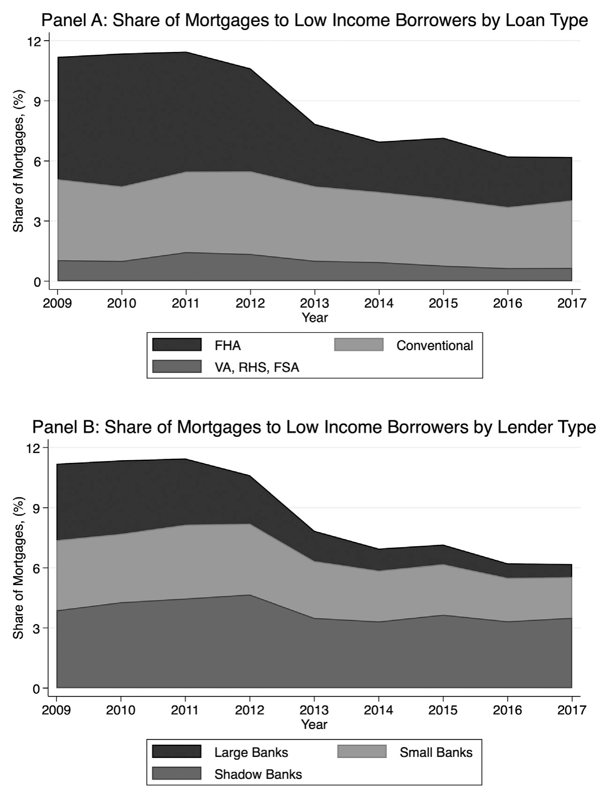
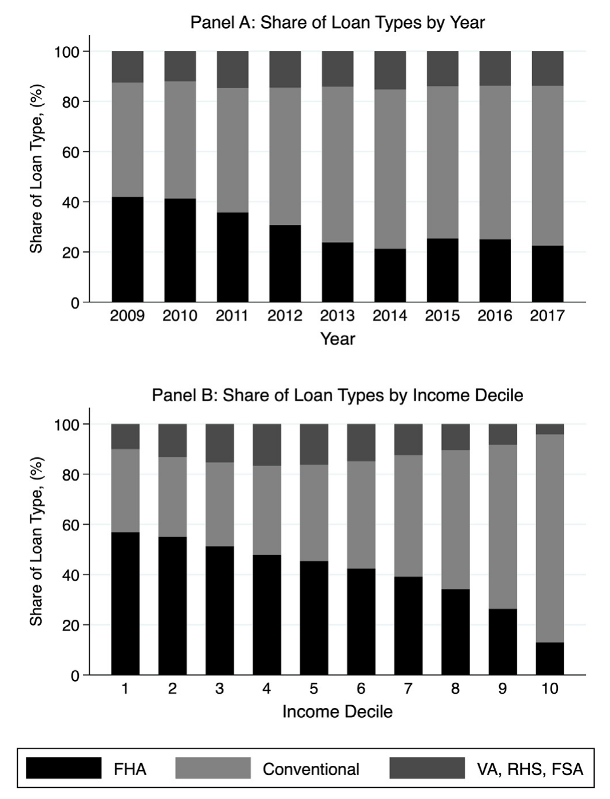
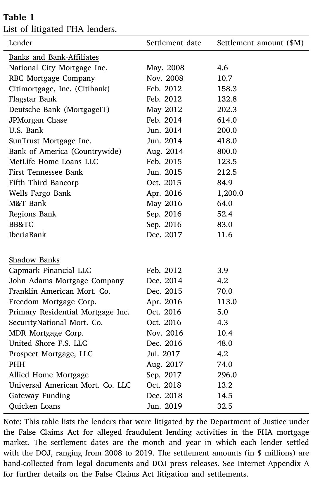
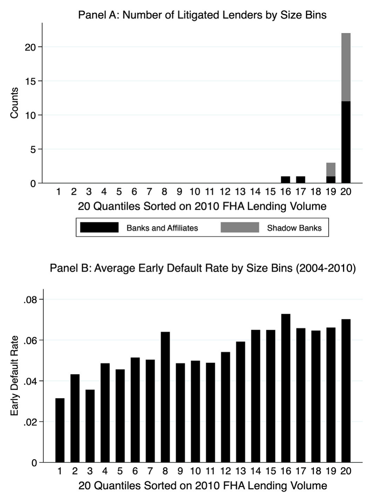
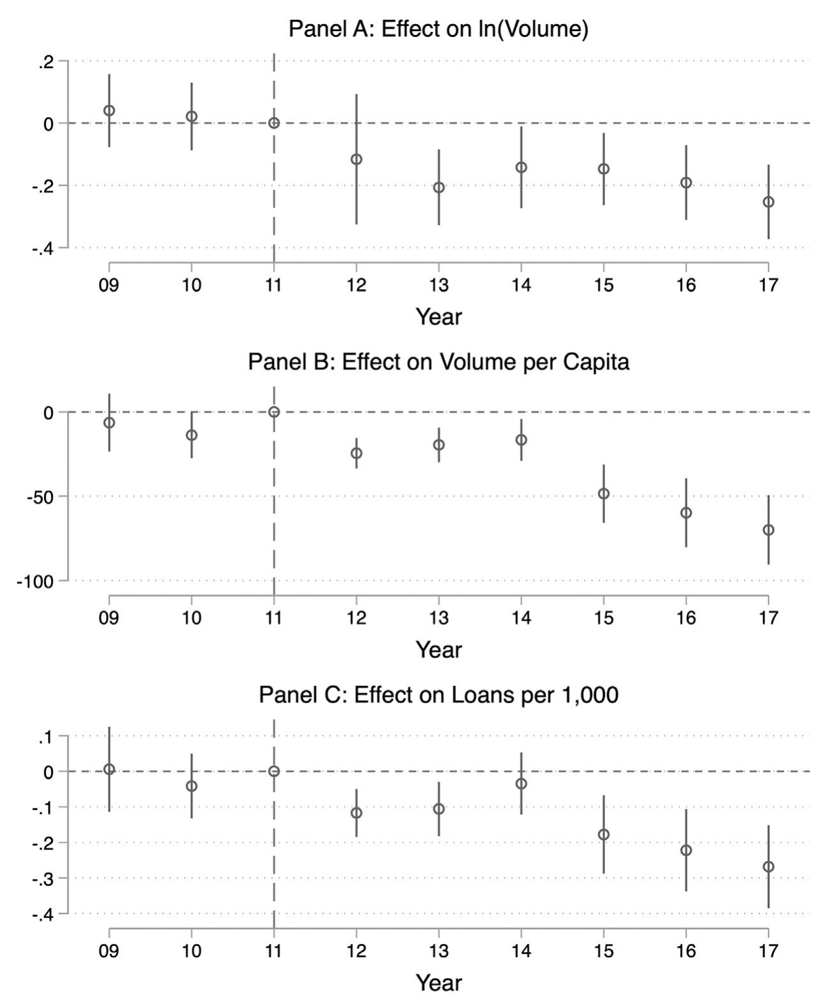
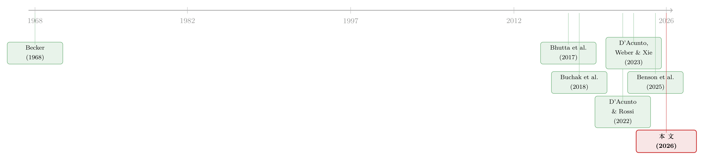

罚款本是好工具，为什么这次罚出了一场信贷退潮？
本文读的是 Frame, Gerardi, Mayer, Xu & Zhao (2026, Journal of Financial Economics)：2010 年代美国司法部以《虚假申报法》起诉大型 FHA 放贷机构、累计逼出 50 亿美元和解金，结果不是让贷款变得更干净，而是把这些大银行整体赶出了 FHA 市场——在高暴露地区造成 18% 的 FHA 放贷收缩，并且这场退潮恰恰落在最依赖 FHA 的低收入家庭头上。一次本意是惩戒欺诈、保护保险基金的执法，最终成了低收入信贷可得性下降的主要推手。
1 一个看上去与「执法」无关的下滑
我们先从一张图说起。
2009 年到 2017 年，在美国所有的购房贷款里，流向低收入借款人（按 HUD 口径，指收入低于其所在县 FFIEC 家庭收入中位数 50% 的人，大致是收入分布的最底层三分之一）的份额，从大约 11% 一路滑到只剩 6%。几乎腰斩。
这是一个不大不小、却足够刺眼的事实。它发生在金融危机之后那段「一切都在慢慢恢复」的年份里。按理说，危机过后监管收紧、市场出清，信贷应当慢慢回到正轨；可偏偏是最需要被托住的那群人——首次购房者、收入有限的家庭——手里的贷款越来越少。

Figure 1: Share of mortgages to low-income borrowers
把这张图拆开看，故事就更具体了。上面那张图的 Panel A 告诉我们：这部分下滑，几乎全部来自 FHA（Federal Housing Administration，联邦住房管理局）贷款的收缩；而 Panel B 告诉我们：扛下这次收缩的，是大银行。换句话说，低收入信贷的退潮 ≈ FHA 的退潮 ≈ 大银行从 FHA 撤退。
那么，一个自然的问题是：大银行为什么撤？
过去文献早就记录过「大银行退、影子银行进」这件事本身（Bhutta et al., 2017），也把它归因于危机后的银行监管变化、影子银行与金融科技的崛起（Buchak et al., 2018）。这些解释都对，但都偏「结构性」、偏「慢变量」。本文作者盯上的，是一个被以往讨论忽略、却时间点高度吻合的「快变量」——政府的诉讼。
2 FHA 是什么，《虚假申报法》又是什么
要理解这场退潮，得先理解被冲击的这块市场长什么样。
FHA 是 1934 年大萧条时为稳定房贷市场而设立的机构，隶属于美国住房与城市发展部（HUD）。它做的事情很简单：为低首付贷款（如今首付低至 3.5%）提供政府担保的按揭保险，由借款人支付保费，作为交换，放贷机构在借款人违约时几乎不承担信用损失。正因为门槛低，FHA 的典型借款人贷款价值比高达 96.5%，信用分更低、债务收入比更高——天然地，这是一块服务于「财力有限者」的市场。它在整个购房贷款市场中常年占比超过 20%；而在收入低于中位数的购房者里，FHA 的占比超过 50%。

Figure 2: Composition of the U.S. mortgage market
接着，是那把后来落下的「剑」：《虚假申报法》（False Claims Act, FCA）。这是一部南北战争时期为打击国防承包商欺诈而立的联邦法律，它赋予司法部一项极具威慑力的武器——对欺诈政府者，可追讨 三倍损失（treble damages） 外加每一笔虚假申报 $5,000–$10,000 的固定罚金。
逻辑链条是这样接上的：FHA 实行「直接背书」（direct endorsement）授权，合格放贷机构有权自行认定贷款是否符合保险条件、无需事先报批，但必须每年、每笔地证明自己遵守了 HUD 的承保规则。而司法部主张：任何在申请 FHA 保险时违反 HUD 规则的行为，都构成一次「虚假申报」。于是，一旦放贷机构在某个抽检样本里被发现一定比例的「瑕疵贷款」，三倍罚则叠加按笔计算的罚金，就足以把账单滚成天文数字。
2011 年，司法部和 HUD 起诉了德意志银行；HUD 只分析了 21 笔涉及 FHA 理赔的贷款发现瑕疵，就在 2012 年促成了一笔超过 $200M 的标志性和解。大幕由此拉开。
3 谁被盯上了？一个反直觉的事实
到这里，故事本该顺理成章：政府打击欺诈，被打击的应该是那些「乱放贷、贷款质量差」的机构。
但真正关键的一步，是作者去核对了「到底谁被起诉」。他们横跨司法部新闻档案、Nexis Uni、Google 等多个来源，手工识别出 2006–2021 年间因 FHA 相关指控被起诉、审计或调查的机构，最终找到 31 家 和解机构，和解金额合计约 50 亿美元。名单触目惊心：富国银行 $1,200M、美国银行（含 Countrywide）$800M、摩根大通 $614M、SunTrust $418M……几乎是一份「大银行点名册」。

Table 1: presents a list of lenders that settled with the DOJ/HUD fol-
然后，反转出现了。
作者把所有 FHA 放贷机构按 2010 年放贷量分成 20 个分位桶，数一数每个桶里有多少家被司法部和解。结果是：几乎所有的和解都集中在 FHA 放贷量最大的前 5% 那一档。如果司法部真的在「精准打击欺诈」，你会期待这些被点名的大机构，在被起诉之前就是「坏账制造机」。可同一张图的另一面板显示，按规模分桶画出 2004–2010 年 FHA 贷款的平均早偿违约率，最大的前 5% 机构根本不是异常值——它们的早期违约率并不比别人高。

Figure 4: Settlements and early default rates across FHA lender size bins
作者把这个观察做成了正式的回归：在贷款层面控制借款人与贷款特征、再加上县-年固定效应，去比较「被起诉机构 / 最大的前 5% 机构 / 银行类机构」与其他机构在 2004–2010 年发放的 FHA 贷款的早偿违约率。结论很干脆：被起诉的机构、最大的机构、银行类机构，早偿违约率反而更低，其中「银行更低」这一项证据最强。
这就把「打击欺诈」这个官方叙事撬开了一道缝。作者很克制地指出：早偿违约不是欺诈的直接度量，他们无法直接检验欺诈是否真的存在。但一个更朴素的解释浮出水面——司法部在选择目标时，可能也在权衡调查的固定成本与潜在和解金额的比例。说白了：大鱼更值得钓。摩根大通的 Jamie Dimon 在那封著名的致股东信里说，$614M 的和解「抹掉了十年的 FHA 利润」，让这门生意对许多银行而言「风险高到、成本高到做不下去」。
4 识别策略：从「谁被罚」到「谁受影响」
知道了「被罚的是大银行、而且它们并不更差」，下一个、也是全文最核心的问题是：这场诉讼，对真实的放贷行为造成了多大冲击？
直接比较「被告 vs 没被告」是危险的——被告本身不是随机的。作者的处理办法分两层。
第一层，是放贷机构层面的双重差分。 这里有一个值得停下来讲清楚的设计选择：作者把「处理组」定义为 被起诉机构及其同侪，也就是 2010 年 FHA 放贷量排进前 5% 的所有大机构——不只是那 31 家被告。为什么连没被告的也算「被处理」？因为惩罚有「杀一儆百」的震慑效应（这正是 D'Acunto, Weber & Xie, 2023 的核心发现：对少数人的惩罚会显著改变未被惩罚者的行为）。于是设定就成了：比较「处理组大机构」与「其他机构」，在 2012 年司法部诉讼骤增前后的 FHA 放贷活动变化，并加入 县-年固定效应（吸收当地人口与经济条件的变化）和 放贷机构固定效应（吸收机构层面不可观测的异质性）。
结果很大：处理组里的大银行——那些有特许经营价值（franchise value）需要保护的多元化机构——把 FHA 购房贷款砍掉了约 60%；而最大的影子银行（shadow bank，即非存款类独立按揭公司）几乎没有减少放贷。
这里藏着本文最优雅的「安慰剂」逻辑：同样面对监管与市场环境，有牌照、有储户、有声誉资本的银行比只做按揭的影子银行对诉讼风险敏感得多。这与银行「有东西可输」（something to lose）的特许价值假说（Demsetz, Saidenberg & Strahan, 1996）一脉相承——也让人想起银行面对同一冲击却走向相反方向的故事（可参见《同样的加息，为什么德国的银行和西班牙的银行走向相反？》）。
第二层，是县层面的双重差分，用来量度「总量」效应。作者用 2010 年「前 5% 大银行」在各县 FHA 放贷中的市场份额，刻画每个县对大银行的事前暴露度（exposure），然后比较高暴露县与低暴露县在诉讼前后 FHA 放贷的变化。
识别假设是：若没有司法部的法律行动，高、低暴露县的 FHA 放贷本应保持相似趋势（平行趋势）。作者给出了三道防线：其一，动态 DiD 显示高、低暴露县的 FHA 放贷水平在 2012 年之前同步移动，恰好从 2012 年开始分叉；其二，做了一个把传统贷款（conventional mortgage）纳入的 三重差分（triple-differences, DDD），证明结果不是被整个按揭市场的趋势带偏的；其三，县层面的大银行暴露度，与县的社会人口特征不相关。

Figure 6: Dynamic difference-in-differences estimates: County-year level FHA mortgages
县层面的基准结果是：从一个「完全不暴露于大银行」的县，移动到「FHA 全靠大银行放贷」的县，会带来 17.8% 的 FHA 放贷收缩（2012–2017）。三重差分给出的量级基本一致——这一点很重要，它意味着诉讼活动开始前后任何别的冲击，都不足以解释这个结果。进一步拆解发现，这 18% 的总量收缩，源自大银行更大幅度的撤退；而影子银行确实显著提升了 FHA 市场份额，填补了大银行留下缺口的约 60%。
也就是说：影子银行接住了一部分，但没接住全部。剩下的那 40%，成了真实消失的信贷。
5 那场退潮，真的「净化」了市场吗？
走到这里，一个为政策辩护的人会立刻反问：就算放贷少了，可如果留下来的贷款更优质、违约更少、消费者得到更好的服务，那这场退潮岂不是「阵痛换健康」？
本文最有力的部分，恰恰是把这套辩护逐条拆掉。
第一，承保标准没有变好。 新发放的 FHA 购房贷款，平均信用分和债务收入比都没有显著变化。
第二，违约率没有变低。 尽管司法部口口声声说打击欺诈是为了减少 FHA 保险基金的损失，但高暴露县与低暴露县在诉讼后的事后违约率几乎一样。退潮没有筛掉「坏贷款」，因为本来这些大机构的贷款就不更坏。
第三，价格与服务质量没有改善、甚至恶化。 高暴露县的平均按揭利率几乎没动；但「代表性信贷员」的质量却相对下降了——作者用信贷员的过往违规率（loan officer misconduct rate）来度量，发现接盘的，更多是那些「信贷员历史劣迹比例更高」的小型影子银行。换句话说，把审慎的大银行赶走之后，缝隙是被资质更可疑的机构填上的。
于是，最后一块拼图落地：作者回到开篇那张「低收入份额下滑」的图，量化了诉讼的贡献。估计结果是——从一个「诉讼前完全不暴露于大银行」的县，移动到「FHA 全靠大银行」的县，会使 2012–2017 年间低收入家庭的购房贷款份额下降 1.1 个百分点。这听起来不大，但它约占低收入贷款份额无条件均值的 11%，是一个经济意义上相当可观的效应。而且，这种下降在农村和服务不足的社区最为剧烈——那里本就放贷机构稀少，大银行一走，几乎无人补位。
这就是本文真正的「刺」：Becker (1968) 的经典理论说罚款是一种高效的惩罚方式。但本文记录的，是罚款与诉讼风险大到把厂商整个赶出市场，于是惩戒的代价以「消费者可得服务的数量与质量双降」的形式，落到了最依赖 FHA 的低收入购房者头上。这是一个典型的非意图后果（unintended consequence）。
6 文献脉络
把这篇论文放回它生长的土壤里，脉络就清楚了。
最上游，是 Becker (1968) 关于「犯罪与惩罚」的经济学框架——罚款作为一种高效威慑工具的理论起点。本文从结论上对它做了一个有条件的反例：当退出市场的代价由第三方（消费者）承担时，「高效惩罚」未必高效。
往下，是一整条关于按揭欺诈的实证文献：从借款人虚报收入（Jiang, Nelson & Vytlacil, 2014；Mian & Sufi, 2017）、虚报资产（Garmaise, 2015）、到房屋估值与第二留置权的造假（Ben-David, 2011；Griffin & Maturana, 2016），Griffin (2021) 做了系统综述。这条线回答的是「危机里有没有欺诈」；本文则接着问「危机后政府对欺诈的反应，又如何重塑了低收入信贷」。

与本文最贴近的两条线，一是「大银行退、影子银行进」的市场结构变迁：Bhutta et al. (2017) 记录了最大银行对低收入借款人放贷的下降，Buchak et al. (2018) 把影子银行崛起归因于监管套利与金融科技，D'Acunto & Rossi (2022) 发现危机后中小额按揭整体减少、尤以大机构为甚。本文的贡献，是给这场结构变迁找到了一个被忽略的因果推手——司法部的诉讼。二是机制上的近邻 Benson et al. (2025)：他们研究摩根大通和美国银行退出「证券化聚合商（aggregator）」角色后，小型 FHA 机构如何转向非银聚合商。作者特意澄清，本文的结果并非由这一聚合业务的退出驱动，因为其他受诉讼影响的大银行本身就是 Ginnie Mae 的直接发行人。
最后，方法上本文借用了 D'Acunto, Weber & Xie (2023)「杀一儆百」的思想，来论证把「同侪」也纳入处理组的合理性。
7 评论与延伸（Q&A + 研究方向）
(a) 几个可能的疑问
Q：把没被起诉的大机构也算进「处理组」，会不会人为放大效应？
恰恰相反，这通常会稀释效应而非放大。如果同侪其实没受影响，把它们混进处理组只会把估计往零拉。作者用 D'Acunto et al. (2023) 的「震慑外溢」为这一设定背书，而真正能让你放心的是：机构层面的拆解显示大银行砍了约 60%、影子银行几乎没动，说明「处理」确实是沿着「银行 / 大机构」这条线发生的，而非被定义方式硬造出来的。
Q：低收入份额的下滑，难道不可能只是危机后需求端的变化（穷人不敢买房了）？
这正是三重差分要排除的。若是纯需求或宏观趋势，传统贷款市场应当同步下滑；但 DDD 把传统购房贷款作为「同县同期」的对照后，FHA 的额外收缩依然存在，且只在 2012 年后、只在高暴露县出现。需求故事很难同时解释「时间点卡在诉讼骤增」和「只打中大银行暴露高的县」。
Q：影子银行填补了 60% 的缺口，那剩下 40% 一定是「真实损失」吗？会不会只是借款人换了渠道？
县层面的总量回归衡量的就是「所有渠道加总后」的净变化，已经把影子银行的接盘算进去了。所以 18% 的县级总量收缩、以及低收入份额 1.1pp 的下降，是渠道替代之后的净效应。这也是为什么作者强调农村与服务不足社区受损最重——那里没有足够多的影子银行来替代。
Q：早偿违约率低，就能证明这些大银行没有欺诈吗？
不能，作者也明确承认这一点。早偿违约只是贷款表现的代理，不是欺诈的直接度量；一笔贷款可以「材料造假」却照常还款。本文的主张更温和也更稳健：没有证据表明被起诉的大机构事前在制造更差的贷款，因此「净化市场」这一辩护缺乏数据支撑，而 DOJ 选择目标时掺杂了「和解金额 vs 调查成本」的考量，是一个更自洽的解释。
Q：为什么银行比影子银行对诉讼风险敏感得多？
因为银行是多元化、有特许经营价值的机构——FHA 业务只是其版图一角，却可能因三倍罚则牵连整个声誉与牌照价值（「有东西可输」，Demsetz et al., 1996）。而独立按揭公司业务单一、franchise value 低，面对同样的预期罚款，退出的机会成本反而更小，于是它们留下来、甚至扩张。
Q：2019 年的政策调整（旨在降低诉讼风险）有没有把银行请回来？
论文第 7 节专门检验了这一点。这是一个很好的「反向事件」——如果诉讼风险真是大银行退出的原因，那么降低风险理应带来一定程度的回流。读者应重点关注其效应的方向与持久性，它是对全文因果叙事的一次镜像检验。
(b) 几个可能的研究问题与提案
1. 信用市场版的「执法非意图后果」：罚款会不会把做市商赶出某个债券细分市场？
【经济故事】本文的核心机制是「大额罚则 → 有特许价值的中介退出 → 服务可得性下降」。把场景搬到公司债：当监管或诉讼对大型做市商（dealer bank）的某类业务施以重罚，它们是否会收缩对高收益、流动性差券种的做市，从而抬高这些券的买卖价差、压低流动性？这与做市商风险限额如何挤压流动性的逻辑高度同构（可参见《无风险市场里的风险厌恶：是谁给做市商系上了「风险限额」这根绳》）。 【可行性】中。需要 TRACE 交易数据 + 监管/和解事件的时间线（可手工搜集），以「做市商对某券种的事前暴露度」构造县级暴露的债券版类比。识别难点在于罚款事件与市场冲击的内生性，需类似的三重差分对照。
2. 外资持有人会不会成为「接盘的影子银行」？
【经济故事】本文里，本土影子银行接住了大银行退出留下的 60% 缺口、且质量更可疑。在公司债市场，当本土银行或本土资管因监管/诉讼风险撤出某一信用层级时，外资持有人是否会反向增持？如果会，他们填补的是「优质缺口」还是「被嫌弃的尾部风险」？这关系到外资是稳定器还是风险放大器。 【可行性】中高。可用 eMAXX / Lipper 的债券持有人层面数据 + 一个针对本土机构的监管冲击，做「本土退出 → 外资进入」的双重差分。识别需要冲击只打中本土机构而与外资需求无关。
3. 「杀一儆百」到底传得多远？震慑外溢的衰减结构。
【经济故事】本文把「同侪」一刀切地纳入处理组，但震慑很可能随「与被告的相似度 / 地理 / 业务重叠」而衰减。能不能把外溢的强度刻画成一条衰减曲线——离被告越近（同州、同规模档、同业务线）的机构反应越大？这能把 D'Acunto et al. (2023) 的「杀一儆百」从「有 / 无」推进到「多强、多远」。 【可行性】高。本文的机构-县-年数据已经足够，只需按机构与被告的相似度分层，做异质性 DiD。数据与识别都现成。
4. 信贷员流动：被赶走的审慎信贷员去了哪里？
【经济故事】本文发现接盘机构的信贷员违规率更高。一个自然的追问是：大银行退出后，原先那些低违规率的信贷员是离开了行业，还是被影子银行吸纳、抑或闲置？这关系到「人力资本」层面的福利损失是否被低估。 【可行性】中。NMLS Consumer Access 提供信贷员层面的轨迹数据（本文已获授权使用），可追踪个体信贷员在机构间的流动，识别上属描述性 + 事件研究，doable，但「违规率」度量的口径需谨慎。
8 参考文献
Becker, G.S. (1968). Crime and punishment: An economic approach. In The Economic Dimensions of Crime. Springer, 13–68.
Benson, D., Kim, Y.S., Pence, K.M. (2025). Nonbank securitizers and mortgage credit supply. Working Paper, SSRN 4615551.
Bhutta, N., Laufer, S., Ringo, D.R. (2017). The decline in lending to lower-income borrowers by the biggest banks. FEDS Notes.
Buchak, G., Matvos, G., Piskorski, T., Seru, A. (2018). Fintech, regulatory arbitrage, and the rise of shadow banks. Journal of Financial Economics 130(3), 453–483.
D'Acunto, F., Rossi, A.G. (2022). Regressive mortgage credit redistribution in the post-crisis era. Review of Financial Studies 35(1), 482–525.
D'Acunto, F., Weber, M., Xie, J. (2023). Punish one, teach a hundred: The sobering effect of peer punishment on the unpunished. Chicago Booth Research Paper No. 19-06.
Demsetz, R., Saidenberg, M., Strahan, P. (1996). Banks with Something to Lose: The Disciplinary Role of Franchise Value. Federal Reserve Bank of New York Policy Review, 1–14.
Frame, W.S., Gerardi, K., Mayer, E.J., Xu, B.Y., Zhao, L.C. (2026). Government litigation risk and the decline in low-income mortgage lending. Journal of Financial Economics 181, 104279.
Garmaise, M.J. (2015). Borrower misreporting and loan performance. Journal of Finance 70(1), 449–484.
Griffin, J.M. (2021). Ten years of evidence: Was fraud a force in the financial crisis? Journal of Economic Literature 59(4), 1293–1321.
Griffin, J.M., Maturana, G. (2016). Who facilitated misreporting in securitized loans? Review of Financial Studies 29(2), 384–419.
Jiang, W., Nelson, A.A., Vytlacil, E. (2014). Liar's loan? Effects of origination channel and information falsification on mortgage delinquency. Review of Economics and Statistics 96(1), 1–18.
Mian, A., Sufi, A. (2017). Fraudulent income overstatement on mortgage applications during the credit expansion of 2002 to 2005. Review of Financial Studies 30(6), 1832–1864.